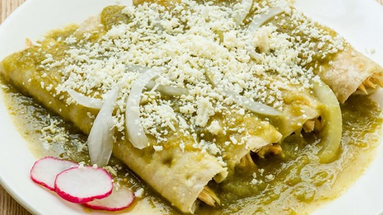

Enchiladas suizas

Platillo elaborado con tortillas de maíz rellenas con pollo, bañadas con salsa verde y gratinadas con queso manchego. La salsa verde se prepara con algo de ajonjolí y crema; tradicionalmente se sirven tres con abundante salsa en un plato metálico o cualquier plato hondo para gratinar.
Ingredientes
- 1 kilo de tomate verde
- 5 chiles serranos
- 1/4 cebollas
- 1 diente de ajo
- 1 ramita de cilantro fresco
- 1 taza de crema acida
- 1/4 taza de caldo de pollo
- 3 cucharadas de aceite
- 1 pizca de sal
- 1 pizca de pimienta
- 8 tortillas de maiz
- 2 pechugas de pollo
- 1 taza de queso
Preparacion
- Precalienta el horno a 200°C.
- Para la salsa, hierve los tomates y los chiles hasta que los tomates estén cocidos.
- Licúa los tomates y los chiles con la cebolla, el ajo, el cilantro, la crema y el caldo de pollo.
- En una olla mediana calienta una cucharada de aceite y fríe la salsa 5 minutos a fuego bajo. Sazona y reserva.
- En una sartén, caliente el resto del aceite y pasa las tortillas por ambos lados un minuto para suavizar. Escurre.
- Rellena las tortillas con el pollo. Acomoda en un refractario y baña con la salsa y el queso.
- Gratina en el horno 5 minutos. Sirve.
Disfruta!